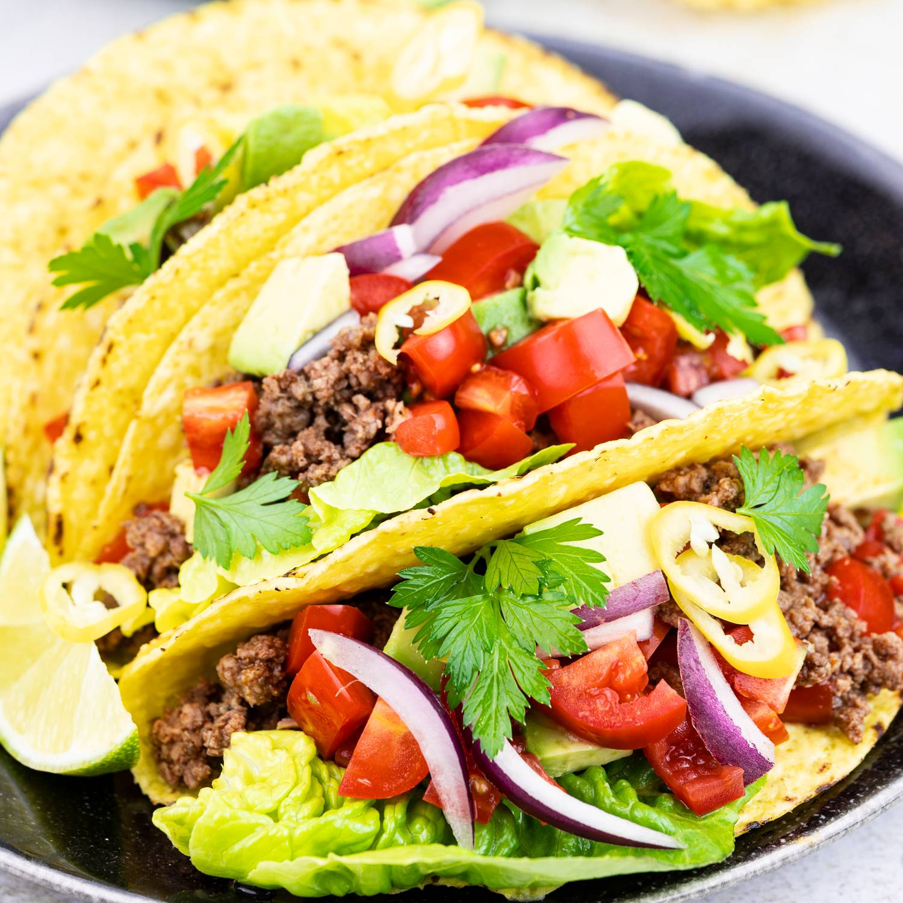

Home
Homemade Tacos

Description:
This homemade taco recipe features seasoned ground beef, fresh toppings, and warm tortillas for a delicious and easy meal. Customize your tacos with your favorite ingredients for the perfect bite!
Ingredients
- 1 lb ground beef
- 1 small onion, diced
- 2 cloves garlic, minced
- 1 tsp salt
- 1 tsp black pepper
- 1 tsp chili powder
- 1 tsp cumin
- 1/2 tsp paprika
- 1/2 tsp oregano
- 1/4 tsp cayenne pepper (optional)
- 1/2 cup water
- 8 small tortillas (corn or flour)
- 1 cup shredded lettuce
- 1 cup diced tomatoes
- 1/2 cup shredded cheese
- 1/2 cup sour cream
- 1/2 cup salsa
- 1/4 cup chopped cilantro (optional)
- 1 lime, cut into wedges
Steps
- In a large skillet, cook the ground beef over medium heat until browned. Drain excess fat if necessary.
- Add diced onion and minced garlic to the skillet. Cook for 2-3 minutes until softened.
- Stir in salt, pepper, chili powder, cumin, paprika, oregano, and cayenne pepper.
- Pour in water and let the mixture simmer for 5 minutes until the flavors combine.
- Warm the tortillas in a dry skillet or microwave.
- Assemble the tacos by spooning the beef mixture onto the tortillas.
- Top with lettuce, tomatoes, cheese, sour cream, salsa, and cilantro.
- Serve with lime wedges on the side. Enjoy!